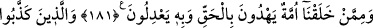
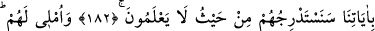
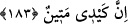

HAKK’A YOL GÖSTEREN VE
ADALETİ YERİNE GETİRENLER
181. Yarattıklarımızdan, daima hakka ileten ve adaleti hak ile yerine getiren bir
millet bulunur.
182. Âyetlerimizi yalanlayanları, hiç bilmeyecekleri yerden yavaş yavaş helâke
götüreceğiz.
183. Onlara mühlet veririm; (ama) benim cezam çetindir.
“Yarattıklarımızdan” onlardan bir kısmından “daima hak ile doğru yolu gösteren”
hak üzere olan, hak sözle insanları hidayete çağıran ve istikamet üzere olmaya davet
eden “ve” aralarında meydana gelen meselelerde “onunla” hak ile “adil davranan”
adaletle hükmedip asla zulme sapmayan “bir ümmet” büyük bir topluluk “vardır.” var
edegelmiştir. Doğruluk üzere bulunan bu ümmet insanları hakka çağırır.
“Mûsâ’nın kavminden hak ile doğru yolu gösteren ve onunla âdil davranan bir
topluluk vardır.” (el-A‘râf, 7/159) ayetinde işaret edildiği üzere Allah Teâlâ Mûsâ
(a.s.)’ın kavminden hidayette olan ve insanları hidayete ileten önderler var ettiği gibi bu
rahmete nail olmuş ümmetten de var etmiştir.
Rasûlullah (s.a.v.) den şöyle bir hadis rivayet edilmiştir: “İsâ (a.s.)’ın nüzûlüne
kadar, ümmetimden hak üzere olan bir topluluk bulunacaktır.”[127] Buna göre yeryüzü
hiçbir zaman böyle bir topluluktan mahrum kalmayacaktır. Başka bir hadiste ise:
“Yeryüzünde “Allah Allah” diyen kimse kalmayıncaya kadar kıyamet kopmaz.”[128]
buyurulmuştur.
Şeyh-i Kebîr Sadreddîn Konevî şöyle demiştir: Yukarıda hadiste “Allah” ismi tekrar
edilerek te’kid edilmiştir. Şüphesiz Allah’ı hakiki anlamda bir zikirle, özellikle de ism-
i a’zam olan ve bütün esmayı kendisinde toplayan “Allah” ismiyle ancak Hakk’ı tam bir
ma‘rifetle tanıyan kimse zikredebilir.
Her asırda mahlûkat içerisinde Allah’ı en iyi tanıyan kimse, Allah’ın halifesidir. O
kimse o asrın en kâmil insanıdır. Rasûlullah (s.a.v.) sanki: “Yeryüzünde insan-ı kâmil
bulunduğu sürece kıyamet kopmaz.” buyurmakta ve insan-ı kâmilin kıyametin kopmasını
engelleyen manevî bir direk olduğuna işaret etmektedir.
En son insan-ı kâmil ahirete göçünce gök yarılır, güneş katlanıp dürülür, yıldızlar
kararıp dökülür, amellerin yazılı olduğu defterler açılır, dağlar yürütülür, yeryüzü